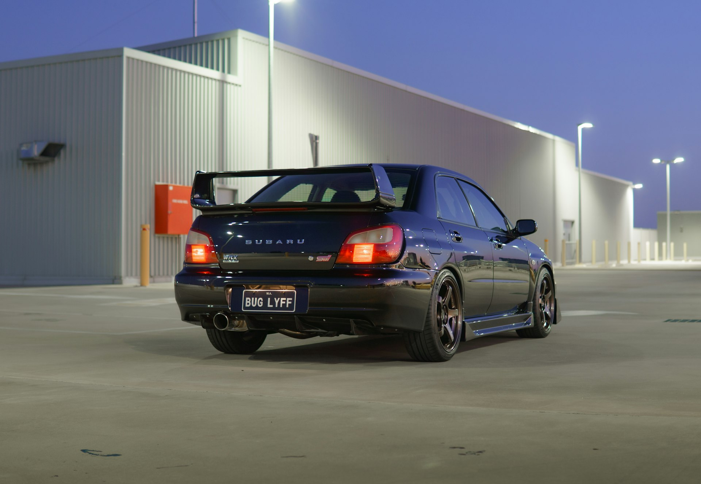
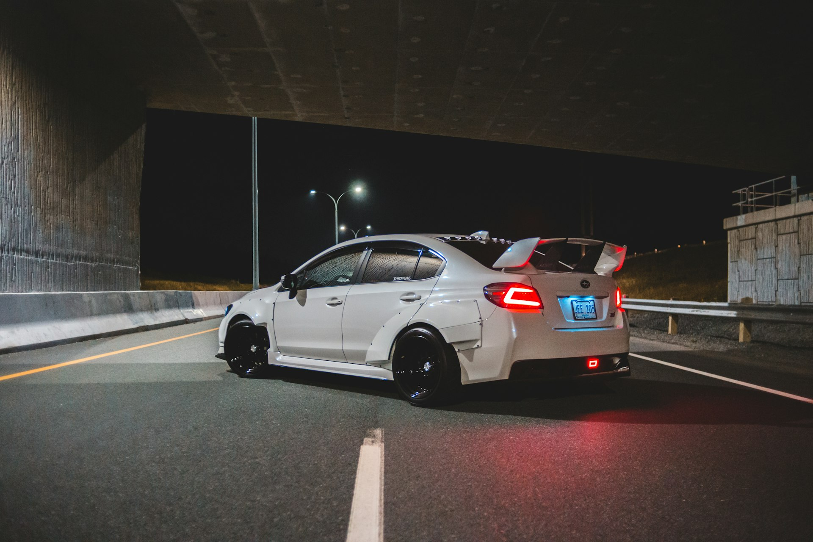
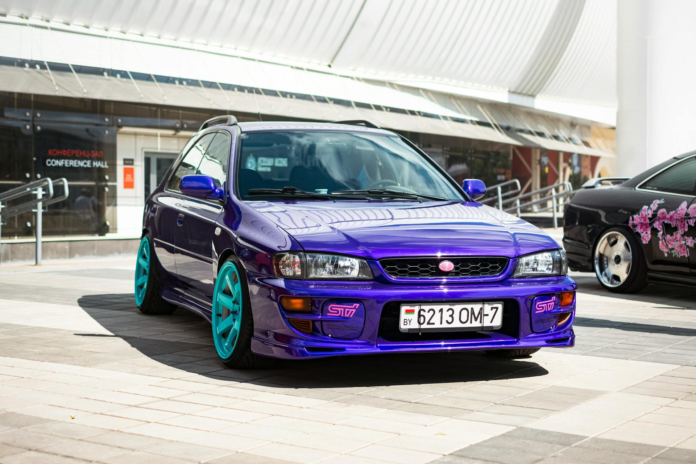
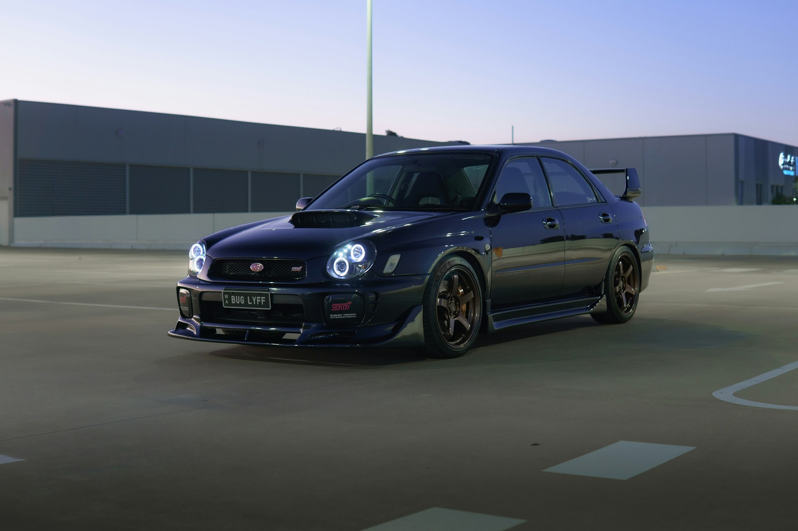
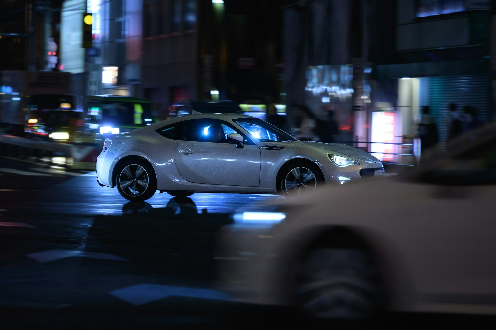
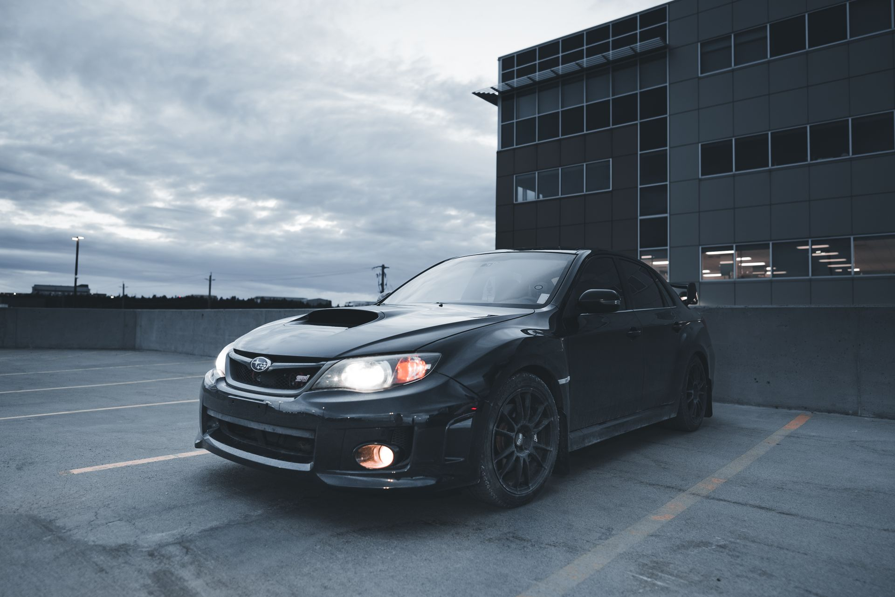

EJ257
~305 л.с.
STI 2004+ · forged internals · dual AVCS · larger intercooler
Сток STI. База большинства серьёзных проектов 300+ л.с. На GD/GG ложится без переделок шасси.
Синдзюку 03:00
На бумаге сток. На серпантине — другая история.
Что внутри, что снаружи, что можно подкрутить. Без коммерции, без «закажите тюнинг».
Симметричный полный привод, оппозитная четвёрка, короткая база. Машина построена так, чтобы её ломали в гравийных раллийных этапах и она доезжала до сервис-парка своим ходом.
Ноздря на капоте — не декор. Через неё дышит интеркулер. Широкие арки, заниженный передок, длинный спойлер — это всё пришло с трасс WRC и осталось как форма.
Большая часть тюнинга — это диалог со стоком, а не отказ от него. Платформа держит серьёзные цифры. Дальше — вопрос бюджета и того, готов ли ты чинить её каждые полгода.

EJ-семейство встаёт в GD/GG без переделок шасси. На GR-кузове сложнее: два CAN-bus, обвязка ECU + ABS + steering angle + DCCD. Ниже — четыре маршрута. Три по линии Subaru, один из соседней вселенной.
~305 л.с.
STI 2004+ · forged internals · dual AVCS · larger intercooler
Сток STI. База большинства серьёзных проектов 300+ л.с. На GD/GG ложится без переделок шасси.
~227 л.с.
WRX 2006+ · closed-deck блок · VF39 турбина
Самый живучий из EJ под наддувом. Долго терпит ошибки тюнера и плохой 95-й.
~268 л.с.
WRX 2015+ · direct injection · twin-scroll
Прямой впрыск, twin-scroll, резкий низ. Сложно прописать в старый кузов из-за электрики.
~280 л.с.
Toyota Supra · сток · до 1000+ при сборке
Свап против логики. Длинный, тяжёлый, не дружит с симметричным полным. Делают единицы.
Стейдж — это договорённость между тюнером, кошельком и нервной системой владельца. Каждый следующий требует больше железа, лучшего топлива и более серьёзного отношения к температуре масла.
LED-полосы по днищу, RGB-ленты в нишах салона, отдельный свет в моторном отсеке. Подсветка номера, дисков, порогов. На стоянке выглядит как технический объект; в движении почти всё это запрещено.
ПДД РФ цветной underglow на дорогах общего пользования не разрешают. Всё это для трека, dyno-дня и фото-сессии в гараже.
Из чего собирается визуал: краска или винил, обвес, диски, оптика. Каждое решение — выбор позиции между сток-разумным и тоталитарной графикой.

Перламутр, кэнди-метталлик, чёрная вишня, классика WRC-blue. Заводская палитра скромнее, но при правильном свете — собранно.

Матовая обтяжка, abstract wrap, sakura-стикер пакет, livery в стиле WRC. Дороже краски, снимается без следа.

Carbon hood, широкие арки, ducktail spoiler, lip kit. Аэродинамика работает ровно настолько, насколько ты готов её замерять.

Volk TE37, Work Meister, Enkei RPF1. Лёгкая ковка экономит больше, чем кажется на стенде.

Smoked headlights, LED DRL, узкий холодный контур. Оптика читается раньше остального — поэтому делают аккуратно.
Можно ничего не трогать.
Можно собрать пятьсот лошадей и уехать туда,
где утром нет встречки.
Машина не задаст ни одного вопроса.